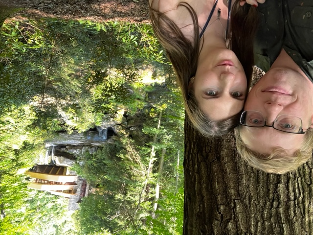

I am Chris Fedosick - born in Pittsburgh, Pennsylvania USA, I moved to Germany in November 2023 to pursure a change in lifestyle. As part of this journey, I aim to learn to code
In my previous life, I worked in supply chain/logistics, and eventually IT as a business analyst
In my new life, I chose to chase change:
Professionally, I have a history and experience in business analaysis.
This includes every step in the software development life cycle, from gathering requirements from users related to new/modified programs, to designing specifications for programmers to follow through the development process. And of course, it also means quality testing what's returned, and monitoring the turnover process between test and production environments.
I began my career in supply chain in 2014, working to forecast OEM and aftermarket demands in support hydraulic hose consumers in industries such as oil and gas, open pit and underground mining,aerospace, and more.
Around 2015 I began a transition in my career - from supply chain and order/demand forecasting, into business analysis. Understanding the ERP's our companies worked with, including Profit 21 and Microsoft Navision. In addition, it was my job to interface barcode scanners with those systems where neccessary. Gradually, I became more systems focused and less supply chain/operations focused. By 2019, as my employeer changed ERP's to Infor's M3 systems, I was one of the lead business analysts on the projects, confirming that the system was a good fit for our comapny, testing setups, and responsible for data migration processes between the old and new systems.
Personally, I'm a laid back and easy going individual. My hobbies vary, from hockey to reading, camping, hiking, as well as travel and exploring new places. I've got plenty of photos from those travels, including mountains, oceans, city scapes and portraits!
In addition to freinds and familiar, I have one very important person in my life - Juliette. As a French woman living in Germany, ou relationship has been a long distance one - difficult, yet rewarding. She is the love of my life, without question. Intelligent, she speaks 3 languages at a native level, and is almost fluent in a fourth. She's also charismatic, often making those around her laugh. Juliette has a number of qualities which have made me fall in love with her - her kind heart, her passionate personality, the inquisitive nature she ahs for trying absolutely anything new...
